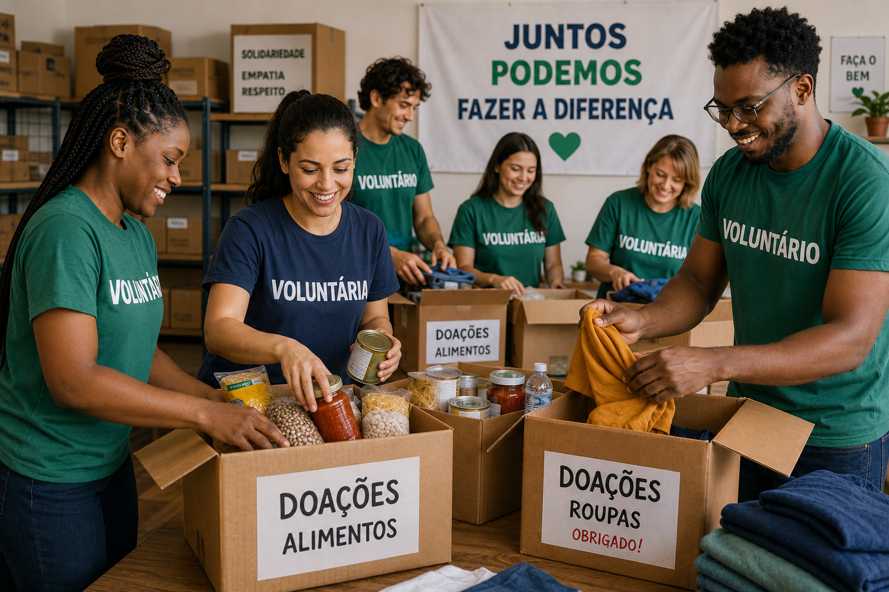

ONG Mãos que Ajudam
Quem somos

Somos uma organização sem fins lucrativos dedicada a transformar vidas através de ações sociais, educação e apoio a famílias em situação de vulnerabilidade.
Fale conosco
Telefone: (35) 99999-0000
E-mail: contato@maosqueajudam.org.br
Endereço: Av. da Moda, 123 — Passos, MG
Prévia de componentes do Design System
Biblioteca de feedback visual padronizada sobre a mesma paleta, tipografia e espaçamentos do restante da plataforma, pronta para ser conectada a dados reais.
Badges — categorização semântica
Alimentos
Roupas
Urgente
Mensal
Alertas
Cadastro recebido! Entraremos em contato pelo e-mail informado.
Não foi possível enviar. Verifique os campos destacados no formulário.
Campanha quase no limite de vagas. Inscreva-se o quanto antes.
Toast — notificação não obstrutiva
Voluntário cadastrado com sucesso.